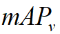
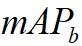
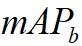
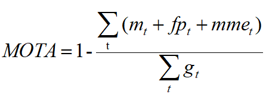

1 · Introduction
Our 3D Lidar object detection and tracking dataset consists of LiDAR scanned point clouds with high quality annotation. It is collected under various lighting conditions and traffic densities in Beijing, China. More specifically, it contains highly complicated traffic flows mixed with vehicles, cyclists, and pedestrians.

2 · Data Download
The 3D Lidar object detection and tracking benchmark consists of about 53min training sequences and 50min testing sequences. The data is captured at 10 frames per second and labeled at 2 frames per second. We provide all the raw data and labeled data.
3 · Data Structure
The folder structure of the 3D Lidar object detection and tracking is as follows:
1) train.zip : training data for 3D Lidar object detection/ tracking. Lidar data is in PCD (Point Cloud Data) and bin file format in 2hz.
2) detection/ tracking_train_label.zip: labelled data for 3D Lidar object detection and tracking.
∙ Each file is a 1min sequence with 2fps.
∙ Each line in every file contains frame_id, object_id, object_type, position_x, position_y, position_z, object_length, object_width, object_height, heading. object_id is only for tracking.
∙ For object_type, 1 for small vehicles, 2 for big vehicles, 3 for pedestrian, 4 for motorcyclist and bicyclist, 5 for traffic cones and 6 for others. During the evaluation in this challenge, we treat the first two types, small vehicle and big vehicle, as one type (vehicle).
∙ Position is in the relative coordinate. The unit for the position and bounding box is meter.
∙ The heading value is the steering radian with respect to the direction of the object.
3) test.zip: testing data for 3D Lidar object detection and tracking.
4) pose.zip: lidar pose. Data in the format of: frame_index, lidar_time, position_(x, y, z), quaternion_(x, y, z ,w). This positon is in the absolute coordinate, please use this position for tracking task.
4 · Evaluation
The evaluation scripts are released on github here.
During the evaluation in this challenge, We do evaluation just for Car (type 1 small vehicles and type 2 big vehicles), Pedestrian (type 3) and Cyclist (type 4). However, please keep the original type IDs during the training and prediction, we will merge the first two types in our evaluation scripts.
5 · Metric formula
1) 3D detection
We use similar metric defined in KITTI[2]. The goal in the 3D object detection task is to train object detectors for the classes 'vehicle', 'pedestrian', and 'bicyclist'. The object detectors must provide the 3D bounding box (3D dimensions and 3D position) and the detection score/confidence. We also note that not all objects in the point clouds have been labeled. We evaluate 3D object detection performance using mean average precision (mAP), based on IoU. Evaluation criterion similar to the 2D object detection benchmark (using 3D bounding box overlap). The final metric will be the mean of mAP of vehicles (

), pedestrian(
 ) and bicyclist(

). We set IoU threshold for each type as 0.7 (Car), 0.5 (Pedestrian), 0.5(Cyclist).
) and bicyclist(

). We set IoU threshold for each type as 0.7 (Car), 0.5 (Pedestrian), 0.5(Cyclist).
2) 3D tracking
Follow the CLEARMOT [1], we use the multiple object tracking accuracy (MOTA) as the evaluation criterion.

Where  ,
,
 ,
,
 ,
and
,
and
 are the number of misses, of false positives, of mismatches, and of objects present respectively, for time
are the number of misses, of false positives, of mismatches, and of objects present respectively, for time
 .
.
For object
 and tracker hypothese
and tracker hypothese
 ,
we use the intersection-over-union (
IoU
) threshold to define.
,
we use the intersection-over-union (
IoU
) threshold to define.
where
 and
and
 are the corresponding 3D bounding boxes for
and
.
We set IoU threshold for each type as 0.5. If IoU(
,
) is less than 0.5, we think the tracker has missed the object.
are the corresponding 3D bounding boxes for
and
.
We set IoU threshold for each type as 0.5. If IoU(
,
) is less than 0.5, we think the tracker has missed the object.
The final score will be the mean MOTA of Car(
 ), Pedestrian(
), Pedestrian(
 ) and Cyclist(
) and Cyclist(
 ).
).
6 · Rules of ranking
1) 3D detection
Result benchmark will be:
| Rank | Method | mAP | AP(Car) | AP(Pedestrian) | AP(Cyclist) |
|---|---|---|---|---|---|
| xxx | xx | xx | xx | xx | xx |
Our ranking will determined by the mAP.
2) 3D tracking
Result benchmark will be:
| Rank | Method | MOTA | MOTA(Car) | MOTA(Pedestrian) | MOTA(Cyclist) |
|---|---|---|---|---|---|
| xxx | xx | xx | xx | xx | xx |
Our ranking will be determined by MOTA.
7 · Format of submission file
1) 3D detection
Please submit one detection_result.zip file. In this zip file, you have one folder named detection_result, under this folder, you have multiple subfolders follow the same name in test_pcd, under each subfolder are result txt files of that sequence:
detection_result
├── 9048_2
├── ├── 2.txt
├── ├── 7.txt
...
├── ├── 462.txt
...
├── 9049_1
...
├── 9063_10
...
- Each line in every file contains object_type, position_x, position_y, position_z, object_length, object_width, object_height, heading, score. score indicates confidence in
detection results.
- Each file name is frame_id name, which should be same as pcd frame id we provide in test_pcd. Each pcd file should have a corresponding result file. Total test result should be 5400 txt files.
- Please only keep type 1/2/3/4 in your result file. We do evaluation just for Car (type 1 and 2), Pedestrian (type 3) and Cyclist (type 4).
2) 3D tracking
Please submit one tracking_result.zip file. Folder and subfolders structure and file name are same to detection_result, but we need object_id in file.
- Each line in every file contains object_id, object_type, position_x, position_y, position_z, object_length, object_width, object_height, heading, score
8 · Publication
|
Please cite our paper in your publications if our dataset is used in your research. TrafficPredict: Trajectory Prediction for Heterogeneous Traffic-Agents [PDF][BibTex]
|
9 · Reference
[1] K. Bernardin, R. Stiefelhagen: Evaluating Multiple Object Tracking Performance: The CLEAR MOT Metrics. JIVP 2008.
[2]Geiger, Andreas, Philip Lenz, and Raquel Urtasun. "Are we ready for autonomous driving? the kitti vision benchmark suite." CVPR, 2012.
Q & A
Q1. Is there corresponding image data included in the dataset?
We have not labeled the image data. Current challenge is just based on the Lidar data.
Q2. Is there any difference between .pcd file and .bin file?
They are just different in format. You can use any of them in your work.
Q3. Should I cut the lidar data like processing KITTI dataset?
No, you should use all the data.
Q4. What's data annotaion rule for different type?
annotation is based on lidar point clouds not on actual object size
Small vehicles: small cars, SUVs.
Large vehicles: Motor vehicles with a height greater than 2 m or a length greater than 6 m.
Motorcyclist and Bicyclist: people riding motorcycles, electric cars, tricycles; bicycles (some people riding or pushing).
Pedestrians: include people who are carrying luggage, pushing a car (a type of car not covered above), and a person in a wheelchair.
Traffic cones : All traffic cones within 60 meters of ego car.